Item databaseItemdatabase
Every base type of gear. The real item rolls a rarity (more bonuses and x1.10..x1.75 base stats), a level and random bonuses; the stats below are the base at level 10. ★ = a named boss item.
Elk basistype uitrusting. Het echte item rolt een zeldzaamheid (meer bonussen en x1,10..x1,75 basisstats), een level en willekeurige bonussen; de stats hieronder zijn de basis op level 10. ★ = een benoemd baasitem.
274 items
| Item | Slot | ClassKlasse | Zone | RarityZeldzaamheid | Set | Base stats (lv 10)Basisstats (lv 10) |
|---|---|---|---|---|---|---|
 Pluisarmband Pluisarmband | Alle klassen | De Knuffelzwammen | rolledwillekeurig | Aanvalssnelheid % 3.2 | ||
 Rozenarmbandje Rozenarmbandje | Alle klassen | De Knuffelzwammen | rolledwillekeurig | Cooldownreductie % 3.2 | ||
 Klodderbroek Klodderbroek | LegsBenen | Alle klassen | De Knuffelzwammen | rolledwillekeurig | Klodderset | Vads 36, Behendigheid 10.5, Verdediging 10.5 |
 Steelbroek Steelbroek | LegsBenen | Alle klassen | De Knuffelzwammen | rolledwillekeurig | Vads 54, Verdediging 21 | |
 Zwambroek Zwambroek | LegsBenen | Alle klassen | De Knuffelzwammen | rolledwillekeurig | Zwamset | Vads 39, Wijsheid 10.5, Verdediging 10.5 |
 Bubbelvest Bubbelvest | ChestBorst | Alle klassen | De Knuffelzwammen | rolledwillekeurig | Vads 48, Verdediging 13.15 | |
 Klodderhesje Klodderhesje | ChestBorst | Alle klassen | De Knuffelzwammen | rolledwillekeurig | Klodderset | Vads 45, Behendigheid 14, Verdediging 13.15 |
 Knaagvachtje Knaagvachtje | ChestBorst | Alle klassen | De Knuffelzwammen | rolledwillekeurig | Vads 78, Verdediging 23.65, Kritiek % 2 | |
| Knuffelharnas | ChestBorst | Alle klassen | De Knuffelzwammen | rolledwillekeurig | Vads 60, Verdediging 18.35 | |
 Sporenmantel Sporenmantel | ChestBorst | Alle klassen | De Knuffelzwammen | rolledwillekeurig | Zwamset | Vads 48, Wijsheid 14, Verdediging 13.15, Healkracht % 3 |
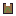 Wortelwambuis ★ | ChestBorst | Alle klassen | De Knuffelzwammen | legendarisch | Vads 100, Verdediging 24, Elementweerstand % 5 | |
 Knuffelcapeje Knuffelcapeje | Alle klassen | De Knuffelzwammen | rolledwillekeurig | Vads 42, Elementweerstand % 3.2 | ||
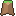 Sporencape | Alle klassen | De Knuffelzwammen | rolledwillekeurig | Vads 35, Wijsheid 7 | ||
 Kloddergrijpers Kloddergrijpers | Alle klassen | De Knuffelzwammen | rolledwillekeurig | Behendigheid 7, Verdediging 7, Kritiek % 1.6 | ||
 Pluiswantjes Pluiswantjes | Alle klassen | De Knuffelzwammen | rolledwillekeurig | Kracht 7, Verdediging 7 | ||
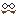 De Neppe Snor van de Spion ★ | HeadHoofd | Alle klassen | De Knuffelzwammen | guhddelijk | Behendigheid 12, Verdediging 11.25, Kritiek % 4 | |
| Het Klodderkroontje ★ | HeadHoofd | Alle klassen | De Knuffelzwammen | guhddelijk | Vads 80, Verdediging 13.5, Healkracht % 8 | |
 Klodderkapje Klodderkapje | HeadHoofd | Alle klassen | De Knuffelzwammen | rolledwillekeurig | Klodderset | Vads 30, Behendigheid 10.5, Verdediging 7.85 |
| Kristalhelmpje | HeadHoofd | Alle klassen | De Knuffelzwammen | rolledwillekeurig | Vads 60, Verdediging 18.35, Elementweerstand % 6 | |
 Lichtzwamhelm ★ Lichtzwamhelm ★ | HeadHoofd | Alle klassen | De Knuffelzwammen | legendarisch | Vads 72, Verdediging 18.35 | |
| Pluishelm | HeadHoofd | Alle klassen | De Knuffelzwammen | rolledwillekeurig | Vads 36, Verdediging 10.5 | |
 Slijmmutsje Slijmmutsje | HeadHoofd | Alle klassen | De Knuffelzwammen | rolledwillekeurig | Vads 30, Verdediging 7.85, Elementweerstand % 3 | |
 Zwamhoed Zwamhoed | HeadHoofd | Alle klassen | De Knuffelzwammen | rolledwillekeurig | Zwamset | Vads 36, Wijsheid 10.5, Verdediging 7.85 |
| Knuffelketting | NecklaceKetting | Alle klassen | De Knuffelzwammen | rolledwillekeurig | Vads 40 | |
| Pluisoorbel | EarringOorbel | Alle klassen | De Knuffelzwammen | rolledwillekeurig | Cooldownreductie % 3 | |
| Roze Ring | Ring | Alle klassen | De Knuffelzwammen | rolledwillekeurig | Kritiek % 3 | |
 Klodderstuiters Klodderstuiters | FeetVoeten | Alle klassen | De Knuffelzwammen | rolledwillekeurig | Klodderset | Vads 24, Behendigheid 7, Verdediging 5.3, Loopsnelheid % 3 |
 Mossloffen Mossloffen | FeetVoeten | Alle klassen | De Knuffelzwammen | rolledwillekeurig | Zwamset | Vads 27, Wijsheid 7, Verdediging 5.3 |
 Plakpantoffels Plakpantoffels | FeetVoeten | Alle klassen | De Knuffelzwammen | rolledwillekeurig | Vads 24, Verdediging 5.3, Loopsnelheid % 4 | |
| Rookbommetjeslaarzen ★ | FeetVoeten | Alle klassen | De Knuffelzwammen | legendarisch | Vads 30, Verdediging 11.25, Loopsnelheid % 6 | |
 Druppelboog Druppelboog | WeaponWapen | Pluisjager | De Knuffelzwammen | rolledwillekeurig | Behendigheid 3, Kritiek % 4, Schade 16.5 | |
 Eikelkatapult Eikelkatapult | WeaponWapen | Pluisjager | De Knuffelzwammen | rolledwillekeurig | Behendigheid 3, Aanvalssnelheid % 4, Schade 15.7 | |
 Klodderkling Klodderkling | WeaponWapen | Knuffelridder | De Knuffelzwammen | rolledwillekeurig | Kracht 3, Levensroof % 4, Schade 15.7 | |
| Knuffelknots | WeaponWapen | Knuffelridder | De Knuffelzwammen | rolledwillekeurig | Verdediging 6, Schade 15.8 | |
 Koninklijke Klodderknots ★ Koninklijke Klodderknots ★ | WeaponWapen | Knuffelridder | De Knuffelzwammen | legendarisch | Vads 20, Kracht 9, Schade 19.5 | |
| Kussenzwaard | WeaponWapen | Knuffelridder | De Knuffelzwammen | rolledwillekeurig | Kracht 6, Schade 16.5 | |
| Plakkerige Pluisboog ★ | WeaponWapen | Pluisjager | De Knuffelzwammen | legendarisch | Behendigheid 9, Kritiek % 3, Schade 19.5 | |
 Pluisboog Pluisboog | WeaponWapen | Pluisjager | De Knuffelzwammen | rolledwillekeurig | Behendigheid 6, Schade 16.5 | |
| Pluishamer | WeaponWapen | Knuffelridder | De Knuffelzwammen | rolledwillekeurig | Kracht 3, Kritiekschade % 10, Schade 16.5 | |
 Rozenstaf Rozenstaf | WeaponWapen | Vadsmagiër | De Knuffelzwammen | rolledwillekeurig | Wijsheid 6, Schade 16.5 | |
 Slijmboek Slijmboek | WeaponWapen | Vadsmagiër | De Knuffelzwammen | rolledwillekeurig | Wijsheid 3, Healkracht % 10, Schade 15.8 | |
 Snoepkruisboog Snoepkruisboog | WeaponWapen | Pluisjager | De Knuffelzwammen | rolledwillekeurig | Behendigheid 3, Kritiekschade % 10, Schade 17.2 | |
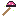 Sporenstaf van de Opperzwam ★ | WeaponWapen | Vadsmagiër | De Knuffelzwammen | legendarisch | Wijsheid 12, Healkracht % 5, Schade 19.5 | |
 Vlammenstaf Vlammenstaf | WeaponWapen | Vadsmagiër | De Knuffelzwammen | rolledwillekeurig | Wijsheid 3, Elementschade % 6, Schade 16.5 | |
 Zwamstokje Zwamstokje | WeaponWapen | Vadsmagiër | De Knuffelzwammen | rolledwillekeurig | Wijsheid 3, Cooldownreductie % 4, Schade 16.5 | |
| Kristalarmband | Alle klassen | De Splinterpieken | rolledwillekeurig | Kritiek % 1.6, Aanvalssnelheid % 4.8 | ||
 Boorbroek Boorbroek | LegsBenen | Alle klassen | De Splinterpieken | rolledwillekeurig | Mika-buitset | Vads 102, Behendigheid 21, Verdediging 28.85 |
 Kristalbeenstukken Kristalbeenstukken | LegsBenen | Alle klassen | De Splinterpieken | rolledwillekeurig | Kristalset | Vads 114, Wijsheid 21, Verdediging 31.5 |
| Schotsbroek | LegsBenen | Alle klassen | De Splinterpieken | rolledwillekeurig | Vads 143, Verdediging 31.5 | |
 Buitvest Buitvest | ChestBorst | Alle klassen | De Splinterpieken | rolledwillekeurig | Mika-buitset | Vads 120, Kracht 21, Behendigheid 14, Verdediging 34.15 |
| Galmpantser | ChestBorst | Alle klassen | De Splinterpieken | rolledwillekeurig | Vads 126, Verdediging 47.3 | |
| IJspelsmantel ★ | ChestBorst | Alle klassen | De Splinterpieken | legendarisch | Vads 140, Verdediging 30, Elementweerstand % 6 | |
 Kristalborstplaat Kristalborstplaat | ChestBorst | Alle klassen | De Splinterpieken | rolledwillekeurig | Kristalset | Vads 138, Wijsheid 24.5, Verdediging 39.35 |
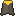 Buitcape | Alle klassen | De Splinterpieken | rolledwillekeurig | Vads 77, Kracht 14, Behendigheid 10.5 | ||
| Galmcape | Alle klassen | De Splinterpieken | rolledwillekeurig | Vads 91, Kritiekschade % 8 | ||
| IJswantjes | Alle klassen | De Splinterpieken | rolledwillekeurig | Verdediging 17.5, Elementweerstand % 8 | ||
| Kristalhandschoenen | Alle klassen | De Splinterpieken | rolledwillekeurig | Wijsheid 17.5, Verdediging 17.5 | ||
| Bril van de Boormeester ★ | HeadHoofd | Alle klassen | De Splinterpieken | guhddelijk | Verdediging 16.5, Kritiek % 7.5, Kritiekschade % 12 | |
 Kristalkroon Kristalkroon | HeadHoofd | Alle klassen | De Splinterpieken | rolledwillekeurig | Kristalset | Vads 84, Wijsheid 21, Verdediging 23.65, Elementweerstand % 6.4 |
 Mika-mijnhelm Mika-mijnhelm | HeadHoofd | Alle klassen | De Splinterpieken | rolledwillekeurig | Mika-buitset | Vads 75, Kracht 17.5, Verdediging 21, Kritiek % 3.2 |
| Sneeuwmuts | HeadHoofd | Alle klassen | De Splinterpieken | rolledwillekeurig | Vads 78, Verdediging 21, Elementweerstand % 9.6 | |
| Spiegelkroontje van Zucht ★ | HeadHoofd | Alle klassen | De Splinterpieken | guhddelijk | Vads 105, Wijsheid 6, Verdediging 18.75 | |
| Spiegelketting | NecklaceKetting | Alle klassen | De Splinterpieken | rolledwillekeurig | Vads 70, Elementweerstand % 11.2 | |
| Galmoorbel | EarringOorbel | Alle klassen | De Splinterpieken | rolledwillekeurig | Kritiekschade % 12.8, Aanvalssnelheid % 4.8 | |
| Kristalring | Ring | Alle klassen | De Splinterpieken | rolledwillekeurig | Kritiek % 3.2, Elementschade % 9.6 | |
| IJzelslofjes | FeetVoeten | Alle klassen | De Splinterpieken | rolledwillekeurig | Vads 66, Verdediging 15.8, Loopsnelheid % 9.6 | |
 Kaaslaarzen Kaaslaarzen | FeetVoeten | Alle klassen | De Splinterpieken | rolledwillekeurig | Mika-buitset | Vads 66, Behendigheid 14, Verdediging 15.8, Loopsnelheid % 6.4 |
 Kristalschoentjes Kristalschoentjes | FeetVoeten | Alle klassen | De Splinterpieken | rolledwillekeurig | Kristalset | Vads 72, Wijsheid 14, Verdediging 18.35, Elementweerstand % 4.8 |
| Stoomlaarzen ★ | FeetVoeten | Alle klassen | De Splinterpieken | legendarisch | Vads 80, Verdediging 16.5, Loopsnelheid % 8 | |
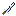 De Galmklauw ★ | WeaponWapen | Knuffelridder | De Splinterpieken | legendarisch | Vads 30, Kracht 12, Schade 21 | |
| De Schaduwloze ★ | WeaponWapen | Pluisjager | De Splinterpieken | legendarisch | Behendigheid 15, Kritiekschade % 10, Schade 21 | |
| Galmhamer | WeaponWapen | Knuffelridder | De Splinterpieken | rolledwillekeurig | Kracht 8, Verdediging 4, Schade 18 | |
| IJspeesboog | WeaponWapen | Pluisjager | De Splinterpieken | rolledwillekeurig | Behendigheid 7, Kritiek % 0.5, Schade 17.7 | |
| Kristalkling | WeaponWapen | Knuffelridder | De Splinterpieken | rolledwillekeurig | Kracht 3.5, Kritiek % 3.5, Schade 17.7 | |
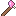 Kristalstaf | WeaponWapen | Vadsmagiër | De Splinterpieken | rolledwillekeurig | Wijsheid 7, Schade 17.7 | |
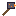 Oververhitte Boorhamer ★ | WeaponWapen | Knuffelridder | De Splinterpieken | legendarisch | Kracht 15, Verdediging 6, Schade 21 | |
| Poollichtboek | WeaponWapen | Vadsmagiër | De Splinterpieken | rolledwillekeurig | Wijsheid 3.5, Elementschade % 5, Healkracht % 11.5, Schade 17.4 | |
| Spiegelstaf van Zucht ★ | WeaponWapen | Vadsmagiër | De Splinterpieken | legendarisch | Wijsheid 16, Kritiek % 4, Schade 21 | |
| Splinterkruisboog | WeaponWapen | Pluisjager | De Splinterpieken | rolledwillekeurig | Behendigheid 3.5, Kritiekschade % 12, Schade 18.3 | |
 Harsarmband Harsarmband | Alle klassen | De Schemerwortel | rolledwillekeurig | Aanvalssnelheid % 6.4, Levensroof % 1.6 | ||
 Honingarmband Honingarmband | Alle klassen | De Schemerwortel | rolledwillekeurig | Cooldownreductie % 4.8, Healkracht % 8 | ||
 Bloesembroek Bloesembroek | LegsBenen | Alle klassen | De Schemerwortel | rolledwillekeurig | Bloesemset | Vads 162, Behendigheid 28, Verdediging 44.65, Kritiekschade % 6.4 |
 Schorsbeenstukken Schorsbeenstukken | LegsBenen | Alle klassen | De Schemerwortel | rolledwillekeurig | Schorsset | Vads 192, Kracht 28, Verdediging 57.8 |
 Wortelbroek Wortelbroek | LegsBenen | Alle klassen | De Schemerwortel | rolledwillekeurig | Wortelset | Vads 198, Wijsheid 31.5, Verdediging 55.15, Elementweerstand % 6.4 |
 Bloesemjak Bloesemjak | ChestBorst | Alle klassen | De Schemerwortel | rolledwillekeurig | Bloesemset | Vads 186, Behendigheid 35, Verdediging 52.5 |
| Cape van gebreide sokken ★ | ChestBorst | Alle klassen | De Schemerwortel | legendarisch | Vads 190, Verdediging 36, Elementweerstand % 8 | |
| Kruinverenmantel ★ | ChestBorst | Alle klassen | De Schemerwortel | legendarisch | Vads 170, Verdediging 36, Loopsnelheid % 5 | |
 Schorspantser Schorspantser | ChestBorst | Alle klassen | De Schemerwortel | rolledwillekeurig | Schorsset | Vads 228, Kracht 31.5, Verdediging 89.3 |
 Wortelmantel Wortelmantel | ChestBorst | Alle klassen | De Schemerwortel | rolledwillekeurig | Wortelset | Vads 228, Wijsheid 38.5, Verdediging 63, Healkracht % 6.4 |
 Schemercape Schemercape | Alle klassen | De Schemerwortel | rolledwillekeurig | Vads 147, Loopsnelheid % 4.8 | ||
 Wortelcape Wortelcape | Alle klassen | De Schemerwortel | rolledwillekeurig | Vads 126, Wijsheid 24.5, Elementweerstand % 8 | ||
| Bloesemhandjes | Alle klassen | De Schemerwortel | rolledwillekeurig | Behendigheid 24.5, Verdediging 24.5, Kritiek % 3.2 | ||
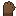 Schorshandschoenen | Alle klassen | De Schemerwortel | rolledwillekeurig | Vads 70, Verdediging 35 | ||
 Bloesemkap Bloesemkap | HeadHoofd | Alle klassen | De Schemerwortel | rolledwillekeurig | Bloesemset | Vads 114, Behendigheid 28, Verdediging 31.5, Kritiek % 3.2 |
| Monocle van Baron Bleu ★ | HeadHoofd | Alle klassen | De Schemerwortel | guhddelijk | Verdediging 22.5, Kritiek % 10, Kritiekschade % 16 | |
 Schorshelm Schorshelm | HeadHoofd | Alle klassen | De Schemerwortel | rolledwillekeurig | Schorsset | Vads 138, Kracht 24.5, Verdediging 55.15 |
 Wortelkroon Wortelkroon | HeadHoofd | Alle klassen | De Schemerwortel | rolledwillekeurig | Wortelset | Vads 144, Wijsheid 31.5, Verdediging 39.35, Elementweerstand % 8 |
| De Eierwarmer ★ | NecklaceKetting | Alle klassen | De Schemerwortel | guhddelijk | Vads 140, Wijsheid 8 | |
 Harsketting Harsketting | NecklaceKetting | Alle klassen | De Schemerwortel | rolledwillekeurig | Vads 140, Verdediging 35 | |
 Sporenoorbel Sporenoorbel | EarringOorbel | Alle klassen | De Schemerwortel | rolledwillekeurig | Elementschade % 14.4, Levensroof % 3.2 | |
| Honingring | Ring | Alle klassen | De Schemerwortel | rolledwillekeurig | Kritiek % 4.8, Healkracht % 12.8 | |
 Bloesemtrippers Bloesemtrippers | FeetVoeten | Alle klassen | De Schemerwortel | rolledwillekeurig | Bloesemset | Vads 102, Behendigheid 21, Verdediging 26.3, Loopsnelheid % 8 |
 Schorslaarzen Schorslaarzen | FeetVoeten | Alle klassen | De Schemerwortel | rolledwillekeurig | Schorsset | Vads 190, Verdediging 49.85 |
 Wortelstappers Wortelstappers | FeetVoeten | Alle klassen | De Schemerwortel | rolledwillekeurig | Wortelset | Vads 126, Wijsheid 21, Verdediging 34.15, Cooldownreductie % 4.8 |
 Bloesemstaf Bloesemstaf | WeaponWapen | Vadsmagiër | De Schemerwortel | rolledwillekeurig | Wijsheid 6.6, Healkracht % 13.5, Schade 18.6 | |
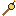 Brokkels Lontstaf ★ | WeaponWapen | Vadsmagiër | De Schemerwortel | legendarisch | Wijsheid 18, Kritiek % 4, Schade 22.6 | |
| De Paraplu van de Kapitein ★ | WeaponWapen | Pluisjager | De Schemerwortel | legendarisch | Behendigheid 18, Loopsnelheid % 6, Schade 22.8 | |
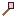 Knoest z'n Lantaarnstaf ★ | WeaponWapen | Vadsmagiër | De Schemerwortel | legendarisch | Wijsheid 21, Kritiek % 5, Schade 24.2 | |
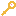 Kooisleutel ★ | WeaponWapen | Knuffelridder | De Schemerwortel | legendarisch | Kracht 18.5, Verdediging 8, Schade 23.5 | |
 Lantaarnstaf Lantaarnstaf | WeaponWapen | Vadsmagiër | De Schemerwortel | rolledwillekeurig | Wijsheid 4, Elementschade % 8, Schade 19.2 | |
 Liaanboog Liaanboog | WeaponWapen | Pluisjager | De Schemerwortel | rolledwillekeurig | Behendigheid 7, Kritiek % 0.5, Loopsnelheid % 4, Schade 18.9 | |
 Raatkruisboog Raatkruisboog | WeaponWapen | Pluisjager | De Schemerwortel | rolledwillekeurig | Behendigheid 3.6, Kritiekschade % 15, Schade 19.5 | |
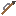 Roofvogelklauw ★ | WeaponWapen | Pluisjager | De Schemerwortel | legendarisch | Behendigheid 18, Kritiek % 4, Schade 22.6 | |
| Roquefortsabel ★ | WeaponWapen | Knuffelridder | De Schemerwortel | legendarisch | Kracht 18, Kritiekschade % 12, Schade 22.8 | |
| Schimmelbreker ★ | WeaponWapen | Knuffelridder | De Schemerwortel | legendarisch | Kracht 21, Verdediging 8, Schade 24.9 | |
 Schorshamer Schorshamer | WeaponWapen | Knuffelridder | De Schemerwortel | rolledwillekeurig | Kracht 9.2, Kritiekschade % 10, Schade 19.5 | |
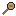 Takelmeesters Touwknots ★ | WeaponWapen | Knuffelridder | De Schemerwortel | legendarisch | Vads 40, Kracht 17, Schade 22.6 | |
 Takkenknots Takkenknots | WeaponWapen | Knuffelridder | De Schemerwortel | rolledwillekeurig | Vads 80, Kracht 3.5, Verdediging 7.5, Schade 18.9 | |
| Wortelwurgers Hartwortel ★ | WeaponWapen | Vadsmagiër | De Schemerwortel | legendarisch | Vads 40, Wijsheid 21, Schade 24.2 | |
| Zeeglasarmband | Alle klassen | De Lampionkust | rolledwillekeurig | Kritiek % 3.2, Aanvalssnelheid % 8 | ||
 Lampionbroek Lampionbroek | LegsBenen | Alle klassen | De Lampionkust | rolledwillekeurig | Lampionset | Vads 258, Wijsheid 38.5, Verdediging 70.85, Elementweerstand % 8 |
 Schelpenbroek Schelpenbroek | LegsBenen | Alle klassen | De Lampionkust | rolledwillekeurig | Schelpenset | Vads 264, Behendigheid 35, Verdediging 76.15, Kritiek % 3.2 |
 Lampionjurk Lampionjurk | ChestBorst | Alle klassen | De Lampionkust | rolledwillekeurig | Lampionset | Vads 300, Wijsheid 49, Verdediging 81.35, Healkracht % 9.6 |
 Schelpenpantser Schelpenpantser | ChestBorst | Alle klassen | De Lampionkust | rolledwillekeurig | Schelpenset | Vads 312, Kracht 38.5, Verdediging 110.3 |
| Zeekoeienhuid ★ | ChestBorst | Alle klassen | De Lampionkust | legendarisch | Vads 260, Verdediging 45, Elementweerstand % 8 | |
| Lampioncape | Alle klassen | De Lampionkust | rolledwillekeurig | Vads 210, Wijsheid 31.5, Healkracht % 6.4 | ||
| Vliegercape | Alle klassen | De Lampionkust | rolledwillekeurig | Vads 203, Loopsnelheid % 6.4 | ||
| Koraalwantjes | Alle klassen | De Lampionkust | rolledwillekeurig | Verdediging 42, Elementweerstand % 9.6 | ||
| Schelpenwanten | Alle klassen | De Lampionkust | rolledwillekeurig | Kracht 21, Behendigheid 21, Verdediging 45.5 | ||
| Kaasdoek van de Vliegervanger ★ | HeadHoofd | Alle klassen | De Lampionkust | legendarisch | Verdediging 28.5, Kritiek % 7.5, Loopsnelheid % 6 | |
 Lampionmuts Lampionmuts | HeadHoofd | Alle klassen | De Lampionkust | rolledwillekeurig | Lampionset | Vads 186, Wijsheid 38.5, Verdediging 49.85, Elementschade % 6.4 |
 Schelpenhelm Schelpenhelm | HeadHoofd | Alle klassen | De Lampionkust | rolledwillekeurig | Schelpenset | Vads 192, Kracht 28, Behendigheid 21, Verdediging 65.65 |
| Schelpenketting | NecklaceKetting | Alle klassen | De Lampionkust | rolledwillekeurig | Verdediging 49, Elementweerstand % 6.4 | |
| Lagunelampion ★ | EarringOorbel | Alle klassen | De Lampionkust | guhddelijk | Wijsheid 16, Elementschade % 8, Healkracht % 16 | |
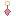 Lampionoorbel | EarringOorbel | Alle klassen | De Lampionkust | rolledwillekeurig | Elementschade % 9.6, Healkracht % 16 | |
| Parelring | Ring | Alle klassen | De Lampionkust | rolledwillekeurig | Vads 245, Kritiek % 4.8 | |
 Lampionslofjes Lampionslofjes | FeetVoeten | Alle klassen | De Lampionkust | rolledwillekeurig | Lampionset | Vads 162, Wijsheid 28, Verdediging 44.65, Cooldownreductie % 4.8 |
 Schelpenlaarzen Schelpenlaarzen | FeetVoeten | Alle klassen | De Lampionkust | rolledwillekeurig | Schelpenset | Vads 168, Kracht 21, Verdediging 44.65, Loopsnelheid % 8 |
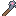 Ankerknots | WeaponWapen | Knuffelridder | De Lampionkust | rolledwillekeurig | Vads 110, Kracht 3.8, Verdediging 9.6, Schade 20.2 | |
| Golfbreker | WeaponWapen | Knuffelridder | De Lampionkust | rolledwillekeurig | Kracht 10.5, Kritiekschade % 12, Schade 20.7 | |
 Harpoenkruisboog Harpoenkruisboog | WeaponWapen | Pluisjager | De Lampionkust | rolledwillekeurig | Behendigheid 4, Kritiek % 2, Kritiekschade % 16, Schade 21 | |
 Kootjes Enterhaak ★ Kootjes Enterhaak ★ | WeaponWapen | Knuffelridder | De Lampionkust | legendarisch | Kracht 21.5, Verdediging 10, Schade 26.5 | |
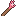 Koraalstaf | WeaponWapen | Vadsmagiër | De Lampionkust | rolledwillekeurig | Wijsheid 7.9, Healkracht % 15.6, Schade 19.9 | |
| Lampionstaf | WeaponWapen | Vadsmagiër | De Lampionkust | rolledwillekeurig | Wijsheid 7.3, Elementschade % 10, Schade 20.4 | |
| Oorlogsvliegerboog ★ | WeaponWapen | Pluisjager | De Lampionkust | legendarisch | Behendigheid 21.5, Kritiek % 5, Schade 25.8 | |
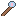 Slurfstaf ★ | WeaponWapen | Vadsmagiër | De Lampionkust | legendarisch | Wijsheid 22.5, Healkracht % 10, Schade 25.8 | |
| Vliegerboog | WeaponWapen | Pluisjager | De Lampionkust | rolledwillekeurig | Behendigheid 8.3, Kritiek % 0.5, Loopsnelheid % 5, Schade 20.2 | |
 Stormarmband Stormarmband | Alle klassen | Hoogvads | rolledwillekeurig | Aanvalssnelheid % 8, Loopsnelheid % 4.8 | ||
 Kristalvlassen Broek Kristalvlassen Broek | LegsBenen | Alle klassen | Hoogvads | rolledwillekeurig | Vads 124.2, Verdediging 28.4 | |
 Pluiskatoenen Broek Pluiskatoenen Broek | LegsBenen | Alle klassen | Hoogvads | rolledwillekeurig | Vads 35.1, Verdediging 11.78 | |
 Schemerzijden Broek Schemerzijden Broek | LegsBenen | Alle klassen | Hoogvads | rolledwillekeurig | Vads 172.8, Verdediging 51.95 | |
 Wolkenwollen Broek Wolkenwollen Broek | LegsBenen | Alle klassen | Hoogvads | rolledwillekeurig | Vads 221.4, Verdediging 66.1 | |
 Wolkwachtbeenstukken Wolkwachtbeenstukken | LegsBenen | Alle klassen | Hoogvads | rolledwillekeurig | Wolkwachtset | Vads 246, Kracht 21, Behendigheid 28, Verdediging 73.5 |
| Zeegaren Broek | LegsBenen | Alle klassen | Hoogvads | rolledwillekeurig | Vads 237.6, Verdediging 68.48 | |
 Amberkoperen Borstplaat Amberkoperen Borstplaat | ChestBorst | Alle klassen | Hoogvads | rolledwillekeurig | Vads 205.2, Verdediging 80.35 | |
 Donderbuiks Regenjasje ★ Donderbuiks Regenjasje ★ | ChestBorst | Alle klassen | Hoogvads | guhddelijk | Vads 270, Verdediging 49.5, Elementweerstand % 10, Healkracht % 12 | |
 Hemelzilveren Borstplaat Hemelzilveren Borstplaat | ChestBorst | Alle klassen | Hoogvads | rolledwillekeurig | Vads 259.2, Verdediging 101.63 | |
| Kandijzilveren Borstplaat | ChestBorst | Alle klassen | Hoogvads | rolledwillekeurig | Vads 124.2, Verdediging 42.55 | |
 Lampionbronzen Borstplaat Lampionbronzen Borstplaat | ChestBorst | Alle klassen | Hoogvads | rolledwillekeurig | Vads 280.8, Verdediging 99.25 | |
 Pluisijzeren Borstplaat Pluisijzeren Borstplaat | ChestBorst | Alle klassen | Hoogvads | rolledwillekeurig | Vads 43.2, Verdediging 14.15 | |
 Wolkwachtkuras Wolkwachtkuras | ChestBorst | Alle klassen | Hoogvads | rolledwillekeurig | Wolkwachtset | Vads 428, Verdediging 112.85 |
 Mantel der Vermommingen ★ Mantel der Vermommingen ★ | Alle klassen | Hoogvads | legendarisch | Vads 210, Behendigheid 16, Loopsnelheid % 5 | ||
 Wolkwachtcape Wolkwachtcape | Alle klassen | Hoogvads | rolledwillekeurig | Wolkwachtset | Vads 182, Elementweerstand % 9.6, bazenschade 4.8 | |
 Wolkwachthandschoenen Wolkwachthandschoenen | Alle klassen | Hoogvads | rolledwillekeurig | Wolkwachtset | Kracht 21, Behendigheid 21, Verdediging 42 | |
 Amberkoperen Helm Amberkoperen Helm | HeadHoofd | Alle klassen | Hoogvads | rolledwillekeurig | Vads 124.2, Verdediging 49.58 | |
| Hemelzilveren Helm | HeadHoofd | Alle klassen | Hoogvads | rolledwillekeurig | Vads 156.6, Verdediging 61.45 | |
 Kandijzilveren Helm Kandijzilveren Helm | HeadHoofd | Alle klassen | Hoogvads | rolledwillekeurig | Vads 75.6, Verdediging 21.27 | |
 Lampionbronzen Helm Lampionbronzen Helm | HeadHoofd | Alle klassen | Hoogvads | rolledwillekeurig | Vads 172.8, Verdediging 59.08 | |
| Moeder Wolkwals Slaapmuts | HeadHoofd | Alle klassen | Hoogvads | rolledwillekeurig | Vads 300, Verdediging 40.5, Loopsnelheid % 5, Healkracht % 14 | |
 Pluisijzeren Helm Pluisijzeren Helm | HeadHoofd | Alle klassen | Hoogvads | rolledwillekeurig | Vads 27, Verdediging 9.5 | |
 Wolkwachthelm Wolkwachthelm | HeadHoofd | Alle klassen | Hoogvads | rolledwillekeurig | Wolkwachtset | Vads 174, Kracht 21, Wijsheid 21, Verdediging 68.3 |
 Lampionkern-Meesterketting Lampionkern-Meesterketting | NecklaceKetting | Alle klassen | Hoogvads | rolledwillekeurig | Vads 94.4, Verdediging 22.66 | |
 Splinterkern-Meesterketting Splinterkern-Meesterketting | NecklaceKetting | Alle klassen | Hoogvads | rolledwillekeurig | Vads 49.6, Verdediging 11.9 | |
 Walvisketting Walvisketting | NecklaceKetting | Alle klassen | Hoogvads | rolledwillekeurig | Vads 210, Healkracht % 12.8 | |
 Wolkkern-Meesterketting Wolkkern-Meesterketting | NecklaceKetting | Alle klassen | Hoogvads | rolledwillekeurig | Vads 108.8, Verdediging 26.11 | |
| Wortelkern-Meesterketting | NecklaceKetting | Alle klassen | Hoogvads | rolledwillekeurig | Vads 80, Verdediging 19.2 | |
 Zwamkern-Meesterketting Zwamkern-Meesterketting | NecklaceKetting | Alle klassen | Hoogvads | rolledwillekeurig | Vads 28, Verdediging 6.72 | |
| Lampionkern-Meesteroorbel | EarringOorbel | Alle klassen | Hoogvads | rolledwillekeurig | Cooldownreductie % 4.72, Elementschade % 20.77 | |
 Regendruppeloorbel Regendruppeloorbel | EarringOorbel | Alle klassen | Hoogvads | rolledwillekeurig | Cooldownreductie % 4.8, Elementschade % 16 | |
 Splinterkern-Meesteroorbel Splinterkern-Meesteroorbel | EarringOorbel | Alle klassen | Hoogvads | rolledwillekeurig | Cooldownreductie % 2.48, Elementschade % 10.91 | |
 Wolkkern-Meesteroorbel Wolkkern-Meesteroorbel | EarringOorbel | Alle klassen | Hoogvads | rolledwillekeurig | Cooldownreductie % 5.44, Elementschade % 23.94 | |
 Wortelkern-Meesteroorbel Wortelkern-Meesteroorbel | EarringOorbel | Alle klassen | Hoogvads | rolledwillekeurig | Cooldownreductie % 4, Elementschade % 17.6 | |
 Zwamkern-Meesteroorbel Zwamkern-Meesteroorbel | EarringOorbel | Alle klassen | Hoogvads | rolledwillekeurig | Cooldownreductie % 1.4, Elementschade % 6.16 | |
| Lampionkern-Meesterring | Ring | Alle klassen | Hoogvads | rolledwillekeurig | Kritiek % 7.55, Kritiekschade % 18.88 | |
 Splinterkern-Meesterring Splinterkern-Meesterring | Ring | Alle klassen | Hoogvads | rolledwillekeurig | Kritiek % 3.97, Kritiekschade % 9.92 | |
 Wolkkern-Meesterring Wolkkern-Meesterring | Ring | Alle klassen | Hoogvads | rolledwillekeurig | Kritiek % 8.7, Kritiekschade % 21.76 | |
 Wolkring Wolkring | Ring | Alle klassen | Hoogvads | rolledwillekeurig | Kritiek % 6.4, Kritiekschade % 12.8, bazenschade 3.2 | |
 Wortelkern-Meesterring Wortelkern-Meesterring | Ring | Alle klassen | Hoogvads | rolledwillekeurig | Kritiek % 6.4, Kritiekschade % 16 | |
 Zwamkern-Meesterring Zwamkern-Meesterring | Ring | Alle klassen | Hoogvads | rolledwillekeurig | Kritiek % 2.24, Kritiekschade % 5.6 | |
 Kristalvlassen Schoentjes Kristalvlassen Schoentjes | FeetVoeten | Alle klassen | Hoogvads | rolledwillekeurig | Vads 64.8, Verdediging 14.15 | |
 Pluiskatoenen Schoentjes Pluiskatoenen Schoentjes | FeetVoeten | Alle klassen | Hoogvads | rolledwillekeurig | Vads 24.3, Verdediging 7.13 | |
| Schemerzijden Schoentjes | FeetVoeten | Alle klassen | Hoogvads | rolledwillekeurig | Vads 162, Verdediging 44.93 | |
 Wolkenwollen Schoentjes Wolkenwollen Schoentjes | FeetVoeten | Alle klassen | Hoogvads | rolledwillekeurig | Vads 140.4, Verdediging 51.95 | |
 Wolkwachtlaarzen Wolkwachtlaarzen | FeetVoeten | Alle klassen | Hoogvads | rolledwillekeurig | Wolkwachtset | Vads 156, Verdediging 57.8, Loopsnelheid % 9.6 |
 Zeegaren Schoentjes Zeegaren Schoentjes | FeetVoeten | Alle klassen | Hoogvads | rolledwillekeurig | Vads 151.2, Verdediging 40.18 | |
 Amberkoperen Boog Amberkoperen Boog | WeaponWapen | Pluisjager | Hoogvads | rolledwillekeurig | Behendigheid 8.55, Schade 17.15 | |
 Amberkoperen Staf Amberkoperen Staf | WeaponWapen | Vadsmagiër | Hoogvads | rolledwillekeurig | Wijsheid 8.55, Schade 17.15 | |
| Amberkoperen Zwaard | WeaponWapen | Knuffelridder | Hoogvads | rolledwillekeurig | Kracht 8.55, Schade 17.15 | |
 Bliksemstaf Bliksemstaf | WeaponWapen | Vadsmagiër | Hoogvads | rolledwillekeurig | Wijsheid 4.4, Kritiek % 2, Elementschade % 9, Schade 20.7 | |
 Donderboog ★ Donderboog ★ | WeaponWapen | Pluisjager | Hoogvads | legendarisch | Behendigheid 23, Kritiekschade % 14, bazenschade 5, Schade 26.3 | |
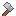 Gorgonzola's Moersleutel ★ | WeaponWapen | Knuffelridder | Hoogvads | legendarisch | Kracht 23, Verdediging 10, Schade 26.3 | |
| Hemelzilveren Boog | WeaponWapen | Pluisjager | Hoogvads | rolledwillekeurig | Behendigheid 12.15, Schade 18.63 | |
 Hemelzilveren Staf Hemelzilveren Staf | WeaponWapen | Vadsmagiër | Hoogvads | rolledwillekeurig | Wijsheid 12.15, Schade 18.63 | |
 Hemelzilveren Zwaard Hemelzilveren Zwaard | WeaponWapen | Knuffelridder | Hoogvads | rolledwillekeurig | Kracht 12.15, Schade 18.63 | |
 Kandijzilveren Boog Kandijzilveren Boog | WeaponWapen | Pluisjager | Hoogvads | rolledwillekeurig | Behendigheid 6.75, Schade 16.06 | |
 Kandijzilveren Staf Kandijzilveren Staf | WeaponWapen | Vadsmagiër | Hoogvads | rolledwillekeurig | Wijsheid 6.75, Schade 16.06 | |
 Kandijzilveren Zwaard Kandijzilveren Zwaard | WeaponWapen | Knuffelridder | Hoogvads | rolledwillekeurig | Kracht 6.75, Schade 16.06 | |
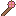 Kleppenstaf ★ | WeaponWapen | Vadsmagiër | Hoogvads | legendarisch | Wijsheid 22.5, Healkracht % 14, Schade 25.6 | |
 Lampionbronzen Boog Lampionbronzen Boog | WeaponWapen | Pluisjager | Hoogvads | rolledwillekeurig | Behendigheid 10.35, Schade 18.36 | |
 Lampionbronzen Staf Lampionbronzen Staf | WeaponWapen | Vadsmagiër | Hoogvads | rolledwillekeurig | Wijsheid 10.35, Schade 18.36 | |
 Lampionbronzen Zwaard Lampionbronzen Zwaard | WeaponWapen | Knuffelridder | Hoogvads | rolledwillekeurig | Kracht 10.35, Schade 18.36 | |
 Onweerstaf ★ Onweerstaf ★ | WeaponWapen | Vadsmagiër | Hoogvads | legendarisch | Wijsheid 23, Elementschade % 10, Schade 26.3 | |
 Pluisijzeren Boog Pluisijzeren Boog | WeaponWapen | Pluisjager | Hoogvads | rolledwillekeurig | Behendigheid 4.95, Schade 14.85 | |
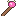 Pluisijzeren Staf | WeaponWapen | Vadsmagiër | Hoogvads | rolledwillekeurig | Wijsheid 4.95, Schade 14.85 | |
 Pluisijzeren Zwaard Pluisijzeren Zwaard | WeaponWapen | Knuffelridder | Hoogvads | rolledwillekeurig | Kracht 4.95, Schade 14.85 | |
| Slaapsterrenboog | WeaponWapen | Pluisjager | Hoogvads | rolledwillekeurig | Behendigheid 24, Kritiek % 8, Schade 27 | |
 Stormboog Stormboog | WeaponWapen | Pluisjager | Hoogvads | rolledwillekeurig | Behendigheid 8.2, Kritiek % 0.5, Loopsnelheid % 5, Schade 20.4 | |
 Walvisbotknots Walvisbotknots | WeaponWapen | Knuffelridder | Hoogvads | rolledwillekeurig | Vads 90, Kracht 10.5, Schade 21 | |
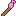 Wiegeliedstaf | WeaponWapen | Vadsmagiër | Hoogvads | rolledwillekeurig | Wijsheid 24, Healkracht % 16, Schade 27 | |
 Wolkenstaf Wolkenstaf | WeaponWapen | Vadsmagiër | Hoogvads | rolledwillekeurig | Wijsheid 8, Healkracht % 15.5, Schade 20.1 | |
 Wolkwachtzwaard Wolkwachtzwaard | WeaponWapen | Knuffelridder | Hoogvads | rolledwillekeurig | Kracht 10, Verdediging 7.5, Schade 20.4 | |
 Zilverstaarts Hoedenspeld ★ Zilverstaarts Hoedenspeld ★ | WeaponWapen | Knuffelridder | Hoogvads | legendarisch | Kracht 21.5, Kritiek % 6, Schade 25.6 | |
| Zwaard van de Zoete Droom | WeaponWapen | Knuffelridder | Hoogvads | rolledwillekeurig | Vads 120, Kracht 24, Schade 27 | |
| Karavaanwachtarmband | Alle klassen | Het Zijdeland | rolledwillekeurig | Karavaanwachtset | Kritiek % 4.8, Aanvalssnelheid % 9.6, bazenschade 3.2 | |
| Zoutkristalarmband | Alle klassen | Het Zijdeland | rolledwillekeurig | Kritiek % 4.8, Aanvalssnelheid % 8 | ||
 Duinwandelaarsbroek Duinwandelaarsbroek | LegsBenen | Alle klassen | Het Zijdeland | rolledwillekeurig | Duinwandelaarset | Vads 276, Behendigheid 38.5, Verdediging 81.35, Kritiek % 4.8 |
| Sterrenwachtbroek | LegsBenen | Alle klassen | Het Zijdeland | rolledwillekeurig | Sterrenwachtset | Vads 306, Behendigheid 31.5, Wijsheid 31.5, Verdediging 91.85 |
| Sterrenzijde-pofbroek | LegsBenen | Alle klassen | Het Zijdeland | rolledwillekeurig | Sterrenzijdeset | Vads 342, Behendigheid 10, Verdediging 45 |
 Zijdepofbroek Zijdepofbroek | LegsBenen | Alle klassen | Het Zijdeland | rolledwillekeurig | Duinzijdeset | Vads 270, Wijsheid 42, Verdediging 76.15, Elementweerstand % 9.6 |
 Duinwandelaarsmantel Duinwandelaarsmantel | ChestBorst | Alle klassen | Het Zijdeland | rolledwillekeurig | Duinwandelaarset | Vads 324, Kracht 38.5, Verdediging 123.35 |
| Sterrenkaartmantel | ChestBorst | Alle klassen | Het Zijdeland | rolledwillekeurig | Sterrenwachtset | Vads 360, Verdediging 133.85, Elementschade % 9.6 |
| Sterrenzijde-mantel | ChestBorst | Alle klassen | Het Zijdeland | rolledwillekeurig | Sterrenzijdeset | Vads 414, Verdediging 54, Elementweerstand % 10 |
 Zijdegewaad Zijdegewaad | ChestBorst | Alle klassen | Het Zijdeland | rolledwillekeurig | Duinzijdeset | Vads 312, Wijsheid 52.5, Verdediging 89.3, Healkracht % 11.2 |
 Duinwandelaarscape Duinwandelaarscape | Alle klassen | Het Zijdeland | rolledwillekeurig | Duinwandelaarset | Vads 217, Loopsnelheid % 4.8, Elementweerstand % 9.6 | |
| Karavaanwachtcape | Alle klassen | Het Zijdeland | rolledwillekeurig | Karavaanwachtset | Vads 280, Wijsheid 21, Elementweerstand % 11.2 | |
| Sterrenkaartcape | Alle klassen | Het Zijdeland | rolledwillekeurig | Sterrenwachtset | Vads 266, Cooldownreductie % 4.8, Healkracht % 9.6 | |
 Zijdesluier Zijdesluier | Alle klassen | Het Zijdeland | rolledwillekeurig | Duinzijdeset | Vads 203, Wijsheid 21, Healkracht % 12.8 | |
 Duinwandelaarswanten Duinwandelaarswanten | Alle klassen | Het Zijdeland | rolledwillekeurig | Duinwandelaarset | Kracht 24.5, Behendigheid 24.5, Verdediging 45.5 | |
| Karavaanwachtwanten | Alle klassen | Het Zijdeland | rolledwillekeurig | Karavaanwachtset | Kracht 28, Behendigheid 28, Verdediging 56 | |
| Messing handschoenen | Alle klassen | Het Zijdeland | rolledwillekeurig | Sterrenwachtset | Verdediging 35, Kritiekschade % 19.2 | |
 Zijdehandschoentjes Zijdehandschoentjes | Alle klassen | Het Zijdeland | rolledwillekeurig | Duinzijdeset | Wijsheid 31.5, Verdediging 28, Elementschade % 9.6 | |
 Duinwandelaarstulband Duinwandelaarstulband | HeadHoofd | Alle klassen | Het Zijdeland | rolledwillekeurig | Duinwandelaarset | Vads 198, Kracht 24.5, Behendigheid 24.5, Verdediging 76.15 |
| Sterrenwachtkap | HeadHoofd | Alle klassen | Het Zijdeland | rolledwillekeurig | Sterrenwachtset | Vads 222, Kracht 28, Wijsheid 28, Verdediging 68.3, Kritiek % 4.8 |
| Sterrenzijde-tulband | HeadHoofd | Alle klassen | Het Zijdeland | rolledwillekeurig | Sterrenzijdeset | Vads 270, Kracht 10, Wijsheid 10, Verdediging 36 |
 Zijdetulband Zijdetulband | HeadHoofd | Alle klassen | Het Zijdeland | rolledwillekeurig | Duinzijdeset | Vads 192, Wijsheid 42, Verdediging 55.15, Elementschade % 8 |
| Zoutkristalkroon ★ | HeadHoofd | Alle klassen | Het Zijdeland | legendarisch | Kracht 10, Wijsheid 15, Verdediging 33 | |
 Rozenketting Rozenketting | NecklaceKetting | Alle klassen | Het Zijdeland | rolledwillekeurig | Verdediging 52.5, Elementweerstand % 8 | |
| Sterrenhartamulet ★ | NecklaceKetting | Alle klassen | Het Zijdeland | legendarisch | Vads 80, Wijsheid 18, Elementschade % 9 | |
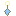 Sterrenoorbel | EarringOorbel | Alle klassen | Het Zijdeland | rolledwillekeurig | Cooldownreductie % 4.8, Elementschade % 17.6 | |
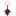 Wimperwaaier ★ | EarringOorbel | Alle klassen | Het Zijdeland | guhddelijk | Vads 180, Elementweerstand % 10, Healkracht % 10 | |
| Astrolabiumring ★ | Ring | Alle klassen | Het Zijdeland | legendarisch | Kritiek % 6, Kritiekschade % 17 | |
| Ringelings Teenring | Ring | Alle klassen | Het Zijdeland | rolledwillekeurig | Kritiek % 9.2, Loopsnelheid % 5, Elementschade % 12 | |
| Saffraanring | Ring | Alle klassen | Het Zijdeland | rolledwillekeurig | Kritiek % 6.4, Kritiekschade % 14.4 | |
| Woestijnroosring | Ring | Alle klassen | Het Zijdeland | rolledwillekeurig | Vads 252, Healkracht % 9.6 | |
 Duinwandelaarslaarzen Duinwandelaarslaarzen | FeetVoeten | Alle klassen | Het Zijdeland | rolledwillekeurig | Duinwandelaarset | Vads 180, Kracht 21, Verdediging 49.85, Loopsnelheid % 9.6 |
| Duinzwemmerslaarzen ★ | FeetVoeten | Alle klassen | Het Zijdeland | legendarisch | Vads 180, Verdediging 36, Loopsnelheid % 8 | |
| Karavaanwachtlaarzen | FeetVoeten | Alle klassen | Het Zijdeland | rolledwillekeurig | Karavaanwachtset | Vads 204, Kracht 21, Wijsheid 21, Verdediging 57.8, Loopsnelheid % 11.2 |
| Sterrenwachtlaarzen | FeetVoeten | Alle klassen | Het Zijdeland | rolledwillekeurig | Sterrenwachtset | Vads 198, Verdediging 55.15, Loopsnelheid % 9.6, Cooldownreductie % 4.8 |
| Sterrenzijde-teenslofjes | FeetVoeten | Alle klassen | Het Zijdeland | rolledwillekeurig | Sterrenzijdeset | Vads 234, Verdediging 30, Loopsnelheid % 6 |
 Zijdeslofjes Zijdeslofjes | FeetVoeten | Alle klassen | Het Zijdeland | rolledwillekeurig | Duinzijdeset | Vads 174, Wijsheid 31.5, Verdediging 49.85, Cooldownreductie % 4.8 |
 Dadelpalmknots Dadelpalmknots | WeaponWapen | Knuffelridder | Het Zijdeland | rolledwillekeurig | Kracht 14, Kritiekschade % 14, Schade 22.5 | |
 Duinvalkboog Duinvalkboog | WeaponWapen | Pluisjager | Het Zijdeland | rolledwillekeurig | Behendigheid 4.5, Kritiek % 5.5, Kritiekschade % 10, Schade 21.9 | |
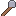 Glimmertjes Dover ★ | WeaponWapen | Vadsmagiër | Het Zijdeland | legendarisch | Wijsheid 24, Elementschade % 10, Schade 28.2 | |
 Karavaankruisboog Karavaankruisboog | WeaponWapen | Pluisjager | Het Zijdeland | rolledwillekeurig | Behendigheid 9.3, Aanvalssnelheid % 6, Schade 21.6 | |
| Komeetboog | WeaponWapen | Pluisjager | Het Zijdeland | rolledwillekeurig | Behendigheid 25.5, Kritiek % 7, Schade 29.4 | |
 Oasefluit Oasefluit | WeaponWapen | Vadsmagiër | Het Zijdeland | rolledwillekeurig | Wijsheid 9.2, Healkracht % 17.6, Schade 21 | |
| Ringbreker | WeaponWapen | Knuffelridder | Het Zijdeland | rolledwillekeurig | Kracht 25.5, Verdediging 12, Kritiek % 4, Schade 29.6 | |
 Rozenkromzwaard Rozenkromzwaard | WeaponWapen | Knuffelridder | Het Zijdeland | rolledwillekeurig | Vads 120, Kracht 4, Verdediging 14, Schade 21.6 | |
 Saffraanstaf Saffraanstaf | WeaponWapen | Vadsmagiër | Het Zijdeland | rolledwillekeurig | Wijsheid 8.5, Elementschade % 12, Schade 21.9 | |
| Sterrenkijkerkruisboog ★ | WeaponWapen | Pluisjager | Het Zijdeland | legendarisch | Behendigheid 22, Kritiekschade % 16, Schade 28.6 | |
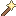 Sterrenstaf | WeaponWapen | Vadsmagiër | Het Zijdeland | rolledwillekeurig | Wijsheid 26.5, Elementschade % 6, Healkracht % 12, Schade 29.4 | |
| Wormelientand ★ | WeaponWapen | Knuffelridder | Het Zijdeland | legendarisch | Kracht 24, Kritiekschade % 12, Schade 28.6 | |
| Zingend Zoutzwaard ★ | WeaponWapen | Knuffelridder | Het Zijdeland | legendarisch | Kracht 23, Verdediging 12, Schade 28.2 | |
| Zoutsplinterboog ★ | WeaponWapen | Pluisjager | Het Zijdeland | legendarisch | Behendigheid 23, Kritiek % 5, Schade 28.2 |